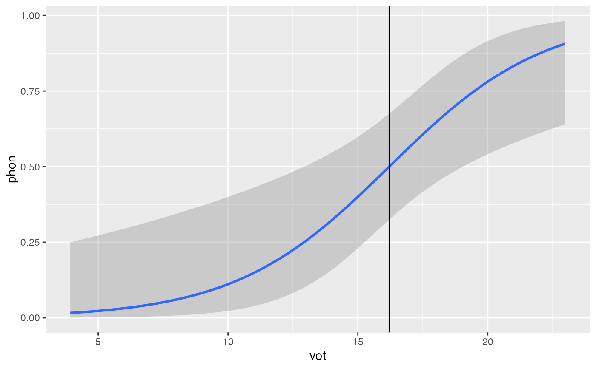
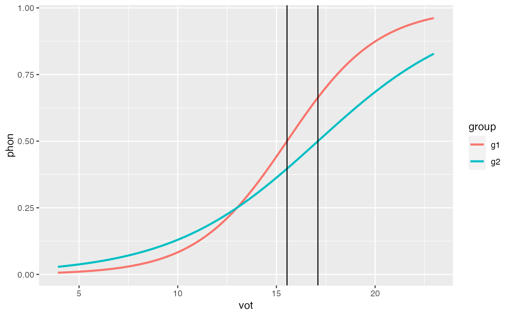

This function allows you to calculate boundary/crossover point in logistic regression models.
cross_over(mod, cont_pred, grouping_var = FALSE, int_adj, slope_adj)
| mod | A glm object |
|---|---|
| cont_pred | The continuous (x) predictor |
| grouping_var | (logical) Set to TRUE to include grouping var |
| int_adj | With grouping variable, include intercept adjustment |
| slope_adj | With grouping variable, include interaction (slope adjustment) |
# Generate data set.seed(1) vot = rnorm(20, 15, 5) vot = sort(vot) phon1 = c(0,1,0,0,0,0,0,1,0,1,0,1,0,1,1,1,1,1,1,1) group1 = rep('g1', 20) df1 = data.frame(vot = vot, phon = phon1, group = group1) phon2 = c(1,0,0,0,0,0,0,0,0,0,0,1,0,1,1,1,1,1,1,1) group2 = rep('g2', 20) df2 = data.frame(vot = vot, phon = phon2, group = group2) df <- rbind(df1, df2) # Fit model glm1 <- glm(phon ~ vot, data = df, family = "binomial") glm2 <- glm(phon ~ vot * group, data = df, family = "binomial") # Get crossover point cross_over(mod = glm1, cont_pred = 'vot')#> [1] 16.20771# Get crossover point of grouping variables cross_over(mod = glm2, cont_pred = 'vot')#> [1] 15.53595cross_over(mod = glm2, cont_pred = 'vot', grouping_var = TRUE, int_adj = 'groupg2', slope_adj = 'vot:groupg2')#> [1] 17.10169# Plot regression with crossover point library(ggplot2) ggplot(df, aes(x = vot, y = phon)) + geom_smooth(method = 'glm', method.args = list(family = 'binomial')) + geom_vline(xintercept = cross_over(mod = glm1, cont_pred = 'vot'))#>ggplot(df, aes(x = vot, y = phon, color = group)) + geom_smooth(method = 'glm', method.args = list(family = 'binomial'), se = FALSE) + geom_vline(xintercept = cross_over(mod = glm2, cont_pred = 'vot')) + geom_vline(xintercept = cross_over(mod = glm2, cont_pred = 'vot', grouping_var = TRUE, int_adj = 'groupg2', slope_adj = 'vot:groupg2'))#>